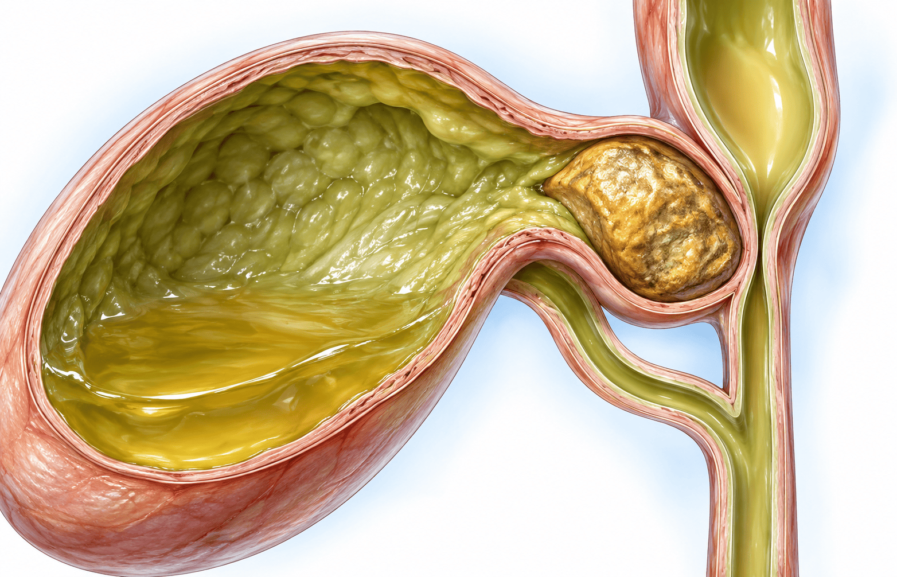
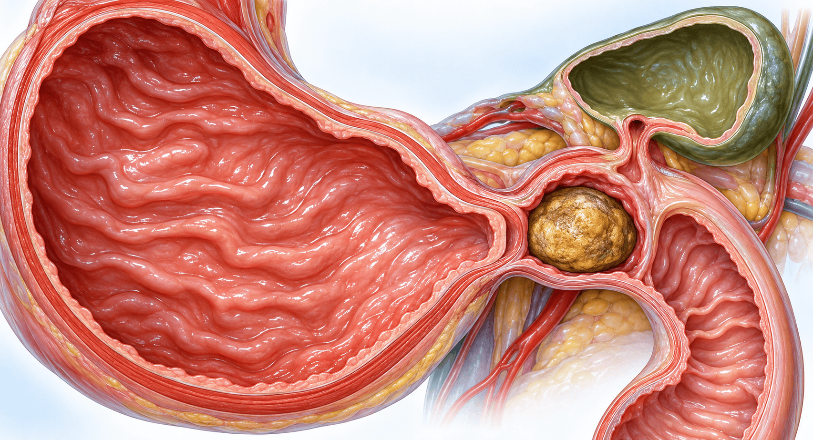
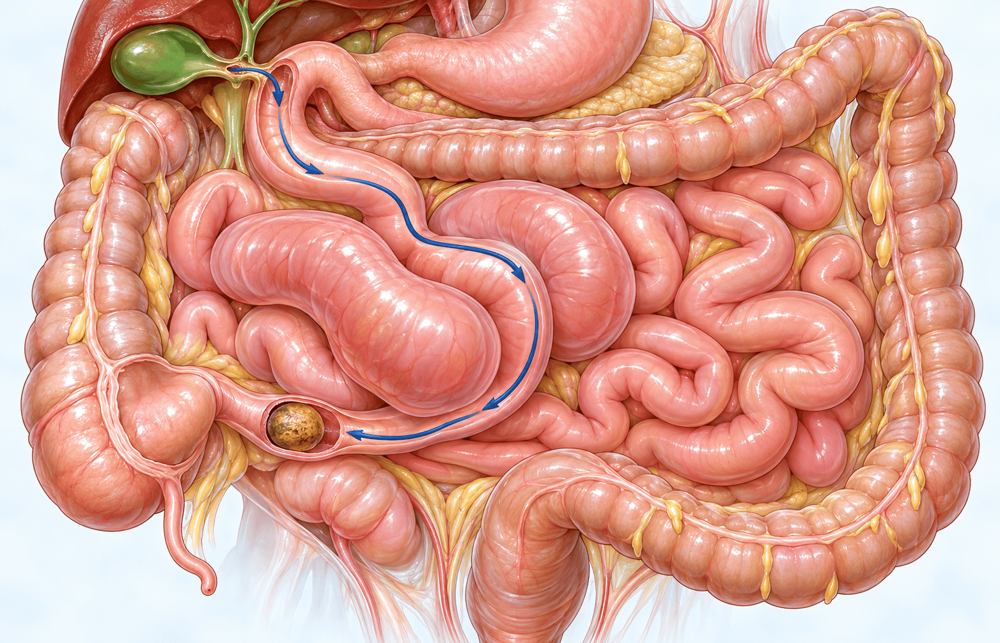

큰 담석의
드문 합병증
Mirizzi · 담낭장관누공 · Bouveret · 담석성 장폐색

CHAPTER 01 · 진료의 출발점
무증상은 관찰, 증상·위험 상황은 수술 판단
큰 담석의 합병증을 이해하기 위한 강의의 기본 관리 틀
무증상 담낭담석
기본 관리: 경과 관찰(observation)
- 큰 담석에서는 수술 여부를 별도로 판단한다.
- 동반 담낭 병변과 특수 임상 상황을 함께 검토한다.
증상 또는 급성담낭염
증상·중증도·전신 상태에 따른 처치
- 담도산통(biliary colic)이 있으면 담낭절제술을 고려한다.
- 급성담낭염은 중증도에 따라 조기 수술, 담낭 배액, 장기 지지 치료를 선택한다.
- 전신 상태가 매우 나쁜 경우를 구분한다.
크기·증상 병력·동반 병변을 함께 보아야 큰 담석의 수술 판단이 선명해진다.
CHAPTER 02 · 자연경과
증상이 시작되면 재발을 함께 설명한다
무증상 담석에서 담도산통·담낭염으로 이어지는 강의의 자연경과
1무증상 담석
담석 환자의 75–80%는 무증상이며, 20–25%는 증상을 보인다.
2담도산통 발생
무증상 담석에서 담도산통은 연 2–3%. 발생 후 첫 1년 재발은 20–50%로 설명한다.
3급성담낭염
담도산통 환자에서 연 1–2%가 급성담낭염을 경험한다. 급성담낭염의 첫 1개월 재발은 30%다.
4다른 경로
만성담낭염, 담관담석과 관련된 췌장염·담관염·황달로도 이어질 수 있다. 큰 담석에서는 압박·누공·장폐색을 함께 살핀다.
과식·기름진 음식 후 명치 또는 우상복부 통증, 발열·백혈구증가·황달을 구분한다.
CHAPTER 03 · 큰 담석과 담낭암
수술 판단의 크기 기준: 담석 ≥3cm
강의가 인용한 크기와 담낭암 위험 자료
LARGE GALLSTONE
≥3cm
연자는 담석 크기가 이 기준에 이르면 담낭암 위험 증가를 고려하여 수술을 권유한다고 설명한다.
 강의 인용 연구
강의 인용 연구미국 7개 병원의 후향적 자료에서 큰 담석과 담낭암의 관련성을 설명한다. 교재 표의 Odds ratio(OR)는 10.1이며, 비교는 큰 담석과 <1cm 담석이다.
 연자가 함께 제시한 해석
연자가 함께 제시한 해석해당 연구에는 Mexican-American이 많이 포함되어 있음을 지적했다. 이후 여러 연구에서도 담석 크기와 위험의 관련성이 확인되어, 현재 수술 판단에 크기를 반영한다고 설명했다.
이 수치는 강의가 인용한 상대적 위험의 지표이며, 개인의 암 발생 확률을 뜻하지 않는다.
CHAPTER 04 · 병태생리
큰 담석은 점막 자극과 담즙 정체를 만든다
강의에서 설명한 거대 담석과 담낭암의 연결 기전
1반복 기계적 자극
큰 담석이 담낭 점막과 반복해서 마찰하면서 점막 손상과 염증을 유발한다.
2만성 염증
담낭염이 오래 지속되고 담낭벽이 두꺼워지며, 담즙 정체와 세균 증식이 염증을 가속한다.
3전암성 변화
강의에서는 점막 손상과 염증이 화생·이형성 같은 전암성 변화로 이어질 가능성을 설명한다.
4암과 진단 지연
전암성 변화에서 담낭암으로 이어지는 경로를 제시한다. 큰 담석의 강한 초음파 음영은 초기 변화 관찰도 어렵게 한다.
담석 보유 기간·개수와 달리, 크기는 강의에서 수술 판단과 직접 연결한 요소다.
CHAPTER 05 · 합병증 지도
압박과 누공, 폐색 위치로 합병증을 나눈다
같은 큰 담석이라도 주변 구조와 이동 경로가 임상상을 바꾼다
Mirizzi 증후군
담낭 경부 또는 담낭관의 매복 담석이 인접 담관을 압박한다. 담관 침식과 담낭담관누공으로 진행할 수 있다.
담낭장관누공
담낭과 십이지장·대장·위 사이에 누공(cholecystoenteric fistula)이 형성된다. 누공과 인접 장기의 관계가 수술 범위를 좌우한다.
담관 압박·담낭담관누공
담낭 경부 또는 담낭관의 매복 담석과 인접 담관의 관계
Bouveret 증후군
누공을 통해 이동한 담석이 위출구 또는 십이지장을 막아 상부 위장관 폐색을 일으킨다.
담석성 장폐색
담석이 장관을 따라 내려가다가 말단회장에서 막히면 담석성 장폐색(gallstone ileus)으로 수술하는 경우가 있다.
담관이 눌렸는지, 장관과 연결되었는지, 담석이 어디에 걸렸는지를 구분한다.
CHAPTER 06 · 수술 안전
안전한 해부 확인이 담도 손상을 줄인다
Critical view of safety(CVS)와 큰 담석 수술의 맥락
안전 시야의 확인
연자는 최소침습 담낭절제술에서 critical view of safety(CVS)를 확보하는 것이 중요하다고 강조한다. 담낭관·담관과 간 하연의 해부 관계를 확인하여 담관과 우간동맥 손상을 피한다.
염증이 해부를 바꾸는 상황
Mirizzi 증후군에서는 담석의 매복과 반복 염증 때문에 이 안전한 해부 확인 자체가 어려워진다.
상담할 수술 합병증 담도 손상 외에도 출혈, 창상 감염, 잔류 담석, 담즙·담석 유출이 가능하다. Trocar 삽입이나 박리 중 장·혈관 손상, 기복 형성에 따른 합병증도 설명한다.
큰 담석에서의 중요성 담관과 인접 장기가 유착된 상황에서는 단순 담낭절제술보다 복잡한 수술이 될 수 있음을 연결해 설명한다.
복강경·로봇 접근 여부와 별개로 해부 확인과 절제 범위 계획이 중요하다.
CHAPTER 07 · Mirizzi · 기전
담낭관·Hartmann 주머니의 매복 담석
Mirizzi syndrome: 인접 담관 압박에서 누공 형성까지

담낭 경부의 매복 담석 · 인접 담관 압박
담관 안의 담석과 다른 출발점
담석이 담낭관(cystic duct) 또는 Hartmann 주머니(Hartmann’s pouch)에 매복되어 인접 담관을 바깥에서 압박한다.
압박에 이어 침식·누공
매복 담석으로 담관 폐쇄가 생기거나, 담관 쪽으로 침식하면서 담낭담관누공(cholecystobiliary fistula)을 형성한다. 담낭장관누공을 동반할 수도 있다.
Mirizzi 분류는 외부 압박과 담관 둘레의 침범 범위, 장관누공 동반 여부를 구분한다.
CHAPTER 08 · Mirizzi · 분류
Type I–IV: 외부 압박과 담관 둘레 침범
원형 도식은 분류에서 사용하는 담관 둘레의 침범 범위를 나타낸다
Type I
외부 압박
매복 담석이 담관을 바깥에서 압박한다.
Type II
담관 둘레 1/3 침범
담석 침식으로 형성된 담낭담관누공의 범위를 구분한다.
Type III
담관 둘레 2/3 침범
담낭담관누공이 더 넓은 담관 둘레를 침범한다.
Type IV
담관 둘레 전체 침범
담낭담관누공이 담관 둘레 전체에 걸친다.
Type II·III·IV는 담낭담관누공의 범위이며, 장관누공 동반은 Type V로 따로 분류한다.
CHAPTER 09 · Mirizzi · 장관누공
Type V는 장관누공 동반 여부를 더한다
어느 Mirizzi 유형이든 담낭장관누공이 함께 있으면 Type V
Mirizzi Type V
어느 Mirizzi 유형이든 담낭장관누공이 동반
Type Va
담낭장관누공 동반 + 담석성 장폐색 없음.
담관과의 관계에 더해 위·십이지장·대장 등 인접 장기의 누공 위치를 파악해야 한다.
Type Vb
담낭장관누공 동반 + 담석성 장폐색 있음.
누공을 통해 장관으로 이동한 담석이 폐색을 일으킨 경우를 구분한다.
Type V는 담관 둘레 침범률의 다음 단계가 아니라 장관누공이 추가된 분류다.
CHAPTER 10 · Mirizzi · 수술 난도
해부 왜곡·섬유화·인접 장기·숨은 암
강의가 제시한 Mirizzi 수술이 어려운 이유
왜곡된 해부
매복 담석과 누공으로 정상 해부 관계가 달라진다. 담낭관과 담관을 구분하는 과정이 복잡해진다.
치밀한 섬유화
Calot 삼각 주변의 반복 염증과 치밀한 섬유화 때문에 박리가 어렵다. 담도와 우간동맥 손상 위험이 따른다.
인접 장기 수술
장관누공이 있으면 담낭만 제거하는 것으로 끝나지 않을 수 있다. 침범된 인접 장기의 절제·수복을 함께 고려한다.
악성 여부 평가 숨은 담낭암을 고려한다. 강의에서는 수술 중 동결절편(frozen section)을 확인하면서 절제 범위를 결정한 상황을 설명했다.
수술 난도는 담석 크기 하나보다 담관·인접 장기·염증의 해부 관계에 의해 커진다.
CHAPTER 11 · Mirizzi · 치료
Type I–III: 절제 범위와 담관 처치를 연결
강의에서 제시한 유형별 수술 선택
| 유형 | 강의의 수술 선택 | 담관 처치·계획 |
|---|
| Type I | 담낭절제술(cholecystectomy)
또는 담낭아전절제술(subtotal cholecystectomy) | 외부 압박을 만드는 매복 담석과 담낭을 처리한다. |
|---|
| Type II·III | 담낭아전절제술 + 매복 담석 제거 | 필요 시 담관 탐색(bile duct exploration)과 T-tube 삽입을 함께 시행한다. |
|---|
담낭담관누공의 범위와 담관 내 담석을 함께 고려하여 담관 탐색·배액 계획을 세운다.
유형별 치료는 연자가 강의에서 제시한 수술 틀이며, 실제 해부와 침범 범위에 맞춰 계획한다.
CHAPTER 12 · Mirizzi · 치료
Type IV·V: 담관 재건과 장기 수술
광범위한 누공에서는 수술 범위가 담낭 밖으로 넓어진다
Type IV
담관 둘레 전체에 걸친 담낭담관누공
담관 절제 + 재건
담관 절제(bile duct resection, BDR)와 간관공장문합(hepaticojejunostomy, HJ)
담관 수술 + 장기 수술
강의의 치료 표: BDR·HJ와 누공이 연결된 위·십이지장·대장 등 인접 장기 수술
절제·수복 범위
누공과 장기 침범 상황을 함께 판단
담관 재건과 장관 수술 가능성까지 수술 전에 대비한다.
CHAPTER 13 · Mirizzi · 최소침습 전략
박리가 어려우면 접근과 절제 계획을 바꾼다
강의에서 설명한 minimally invasive surgery(MIS)의 역할
1안전한 박리 평가
Calot 삼각 주변의 치밀한 섬유화로 담도·우간동맥 손상 위험이 큰지 평가한다.
2Fundus first
Calot 삼각 박리가 어려운 경우 담낭저부 우선 접근(fundus-first approach)을 제시한다.
3여러 수술안 준비
담낭절제술, 담관 탐색·T-tube 삽입, 다른 장기 절제를 포함한 대체 수술안을 미리 세운다.
4선택된 환자에서 MIS
경험과 로봇 기술의 발전으로 선택된 환자에서 최소침습 수술을 시행하지만, 복잡한 박리와 추가 절제의 어려움은 함께 고려한다.
단일 수술안에 고정하지 않고, 누공·담관·인접 장기의 상태에 따라 대응할 계획을 준비한다.
CHAPTER 14 · Bouveret · 기전
누공으로 이동한 담석이 위출구를 막는다
Bouveret syndrome: 위출구·십이지장 폐색

담낭십이지장누공 · 이소성 담석 · 근위부 폐색
해부와 폐색 위치
담낭십이지장누공(cholecystoduodenal fistula)을 통해 이동한 담석이 유문 하방 십이지장에 걸려 위출구 또는 십이지장 폐색을 유발할 수 있다.
 강의 증례의 교육 포인트
강의 증례의 교육 포인트CT에서 담낭 밖의 담석과 위출구 폐색을 관찰했다. 수술에서 누공을 확인하고 담석 제거와 담낭·인접 장기 수술을 시행했다.
Bouveret은 담석의 장관 이동과 상부 위장관 폐색 위치를 함께 이해해야 한다.
CHAPTER 15 · Bouveret · 임상상
비특이적 소화기 증상에서 출혈·탈수까지
상부 위장관 폐색으로 연결해 읽는 증상
일반적인 증상
비특이적 소화기 증상
- 오심·구토
- 복통·복부팽만·변비
- 담석 병력과 위출구·십이지장 폐색 소견을 연결해 해석한다.
중증에서의 양상
출혈·섭취 장애와 전신 영향
- 토혈(hematemesis)·흑색변(melena): 폐색 부위의 자극과 연결한다.
- 탈수(dehydration)·영양불량(malnutrition): 섭취 장애가 지속되면서 이어질 수 있다.
증상만으로 특정하기보다 폐색·이소성 담석·누공의 해부 관계를 함께 살핀다.
CHAPTER 16 · Bouveret · 영상
Rigler 삼징: 공기·이소성 담석·폐색
연자는 전체 환자의 40–50%에서 삼징이 관찰된다고 설명한다
RIGLER’S TRIAD
40–50%
연자는 전체 환자에서
삼징이 관찰되는 비율로
설명한다.
담도 내 공기
Pneumobilia: 담도 안의 공기를 확인한다. 담낭과 장관 사이의 연결을 이해하는 영상 단서다.
이소성 담석 Ectopic gallstone: 담석이 담낭이 아닌 위치에 있다. 강의 증례에서는 유문 하방 십이지장의 담석을 확인했다.
장관 폐색
Intestinal obstruction: 위출구 또는 십이지장 폐색이 동반된다. 담석의 위치와 폐색 부위를 연결한다.
강의에서는 이 세 소견을 Rigler’s triad로 묶어 설명했다.
CHAPTER 17 · 누공 · 위험과 위치
가장 흔한 누공은 십이지장과 연결된다
고령 여성·담석 병력·큰 담석과 주변 장기의 해부 관계
강의에서 제시한 위험 인자
여성, >60세의 고령, 담석 병력, 2–8cm의 큰 담석을 제시한다. 십이지장은 담낭과 가깝고 벽이 얇아 누공이 흔하며, 횡행결장도 담낭 아래를 지나 누공이 생길 수 있다.
누공의 만성 염증과 악성 변화 가능성, 기존 담낭암에 의한 누공 형성도 함께 고려한다.
CHAPTER 18 · 담석성 장폐색
담석이 내려가도 말단회장에서 막힐 수 있다
Gallstone ileus: 누공에서 원위부 장폐색으로 이어지는 경로

누공 통과 · 장관 이동 · 말단회장 폐색
장관으로 들어간 담석
담낭십이지장누공을 통해 담석이 장관으로 이동한다. 근위부를 통과하더라도 장관 이동 경로에서 다시 폐색을 일으킬 수 있다.
강의가 강조한 폐색 위치 연자는 담석이 내려가다가 말단회장(terminal ileum)에서 막혀 담석성 장폐색으로 수술하는 경우를 설명했다.
Bouveret은 위출구·십이지장, 강의의 담석성 장폐색 설명은 말단회장 폐색과 연결된다.
CHAPTER 19 · 누공 · 수술 증례의 교훈
누공 장기의 상태가 절제·수복 범위를 바꾼다
강의 증례는 식별 정보 없이 수술 판단의 연결점으로 정리한다
담낭십이지장누공 증례
담석 제거 후 절제·문합
- 수술 전 악성 여부 평가와 수술 중 동결절편 확인을 함께 시행했다.
- 담석 제거 후 담낭절제술과 십이지장 구부·원위부 위 절제를 시행했다.
- 위공장문합(gastrojejunostomy)을 시행했다.
담낭대장누공 증례
누공 경로 확인 후 일차 봉합
- 큰 담석이 있는 담낭이 대장에 붙어 있었다.
- 담낭 천공과 누공이 형성되는 상황을 확인했다.
- 누공 경로를 살핀 뒤 대장 절제 없이 일차 봉합(primary repair)으로 수복했다.
두 증례의 수술 범위를 하나의 표준 술식으로 일반화하지 않고, 각각의 해부·악성 평가와 연결한다.
CHAPTER 20 · 특수 상황
증상이 없어도 수술을 고려하는 임상 맥락
큰 담석 이외에 강의가 함께 제시한 상황
| 임상 상황 | 강의에서 설명한 판단 |
|---|
| 비만대사수술 | 담석이 동반된 경우 동시 담낭절제술을 설명한다. 강의는 비만수술 후 2년 내 3.7%에서 증상이 생긴다는 자료를 제시했다. |
|---|
| 장기이식 | 이식 이후 담석 문제가 생겼을 때의 염증과 복잡성을 고려한다. 이식 전 또는 이식 중 담낭절제술을 제시한다. |
|---|
| 만성 용혈·담관담석 | 겸상적혈구병(sickle cell disease), 구상적혈구증(spherocytosis) 등 용혈 상태와 총담관담석 동반 상황을 수술 적응증에 포함한다. |
|---|
| 췌담관 합류 이상 | 췌담관 합류 이상(APBDU)과 담관낭종(choledochal cyst)을 설명한다. 췌액 역류와 담낭암 위험의 관계 때문에 담낭절제술을 권유한다. |
|---|
담낭담석의 증상뿐 아니라 예정 수술·이식·용혈·담관 병변을 함께 확인한다.
CHAPTER 21 · 동반 병변 · Q&A
담석과 작은 용종: 본강의와 Q&A를 구분
동반 병변은 큰 담석의 수술 판단을 둘러싼 맥락으로 읽는다
본강의의 수술 판단
동반 병변과 담석 추적의 맥락
- 큰 담석, 담낭 용종 동반, 국소 석회화 담낭을 수술 적응증으로 정리했다.
- 이식·용혈·담관담석·악성 의심 상황도 함께 제시했다.
- 담석 때문에 용종의 초음파 추적이 어려울 수 있다고 설명했다.
연자 Q&A · 작은 용종과 담석
연수강좌 질의응답에서 연자가 밝힌 개인 진료 의견
- 함께 있다는 이유만으로 바로 수술하지는 않는다고 답했다.
- 작은 용종과 담석은 추적관찰할 수 있다고 답했다.
- 용종 크기와 담석 증상에 따라 수술을 결정한다는 의견을 밝혔다.
작은 용종 동반에 대한 연자의 Q&A 의견을 모든 동반 담석의 일괄 수술 권고로 바꾸지 않는다.
CHAPTER 22 · 연자 Q&A · 비수술 상황
무증상 담석의 약물·호르몬 관련 답변
다음 내용은 연수강좌 질의응답에서 연자가 밝힌 의견이다
연자 Q&A · 연수강좌 질의응답에서 연자가 밝힌 의견 경구 용해요법
경구 용해요법연자는 무증상 담석에 개인적으로 용해요법을 시행하지 않는다고 답했다. 환자가 강력히 원하면 UDCA/CDCA 복합제를 시도하고, 6개월 이상 투여하며 초음파 추적을 고려한다는 의견이다.
체중감량 주사
연자는 GLP·GIP 영향과 급격한 체중감소를 담석 형성과 연결했다. 증상 없으면 주사를 지속할 수 있다는 의견과 함께, 장기간 금식보다 매끼 조금이라도 식사할 것을 제안했다.
무증상에서의 초음파 체중감량 주사 관련 질문에 연자는 증상이 없다면 초음파 검진의 의미가 크지 않을 것이라고 답했다. 이 내용은 해당 질문에 대한 연자의 Q&A 답변이다.
에스트로겐 치료 호르몬 치료는 담즙 과포화·담석 형성과 연관되지만, 갱년기 증상이 심한 무증상 환자에서는 HRT 지속 의견을 밝혔다. 담도산통이 생기면 담낭절제 후 HRT를 고려한다고 답했다.
연자 Q&A · 무증상 담석의 수술 적응증과, 환자의 비수술 선택에 대한 답변을 구분한다.
CHAPTER 23 · 연자 Q&A · 재발과 수술
산통 병력·환자 의사·수술 방법을 함께 상담
다음 내용은 연수강좌 질의응답에서 연자가 밝힌 의견이다
연자 Q&A증상 소실 후 관찰 선택 재발하지 않는 환자도 반 이상이므로 환자가 원하지 않으면 추적관찰할 수 있다는 의견을 밝혔다.
연자 Q&A복강경과 로봇
연자는 두 접근 사이 우월성을 확정하지 않았으며, 일상생활 복귀에도 유의한 차이가 없다고 답했다. 로봇 수술의 ICG 담도 조영 가능성을 장점으로 설명했다.
강의자의 회복 안내 1박 2일통상 입원 일정
3–4일사무직 휴식 후 복귀 가능
연자 Q&A · 증상이 없어졌더라도 과거 담도산통 병력과 환자의 수술 선호를 함께 반영한다.
CLOSING
다시 보기 · 문의
QR로 다시 보기 · 의료진 강의 학습자료
광교바른내과 이 자료의 성격
의료진 강의 학습자료 · 큰 담석의 수술 판단과 담관 압박·장관누공·폐색을 정리한다. 본강의의 설명과 연자 Q&A 답변을 구분한다.
참고한 자료 아산 28회 연수강좌
무증상 담낭질환, 언제 수술할 것인가?(이우형)
SCAN TO REVISIT
강의 학습자료 다시 보기
QR을 스캔하면 휴대폰에서
같은 자료를 다시 볼 수 있습니다
본강의의 설명과 연자 Q&A 답변을 구분하여 진료 판단의 맥락을 보존한다.